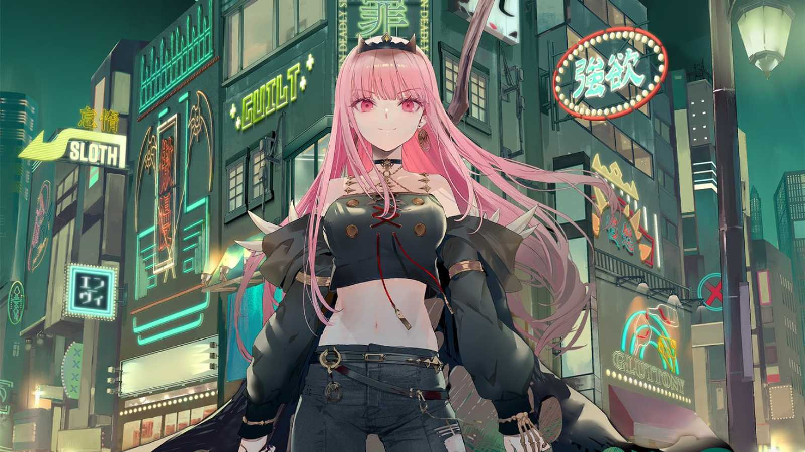
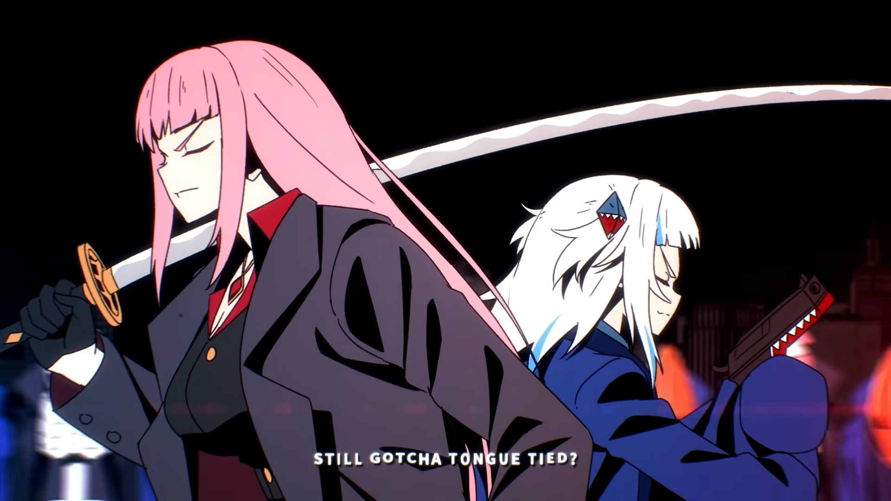

Mori Calliope Mori Calliope (森 カリオペ) is a female English-speaking Virtual YouTuber associated with hololive, debuting in 2020 as part of hololive English first generation "-Myth-" alongside Ninomae Ina'nis, Takanashi Kiara, Watson Amelia and Gawr Gura.
Official Background The Grim Reaper's first apprentice. Due to modern medical care causing a decline in the reaping business, Calliope decided to become a VTuber to harvest souls instead. It seems that the ascended souls of the people who are vaporized by the wholesome interactions between VTubers go to her as well. That being said, despite the image, her hardcore vocals and manner of speech gives off, she's actually a gentle-hearted girl who cares greatly for her friends.  